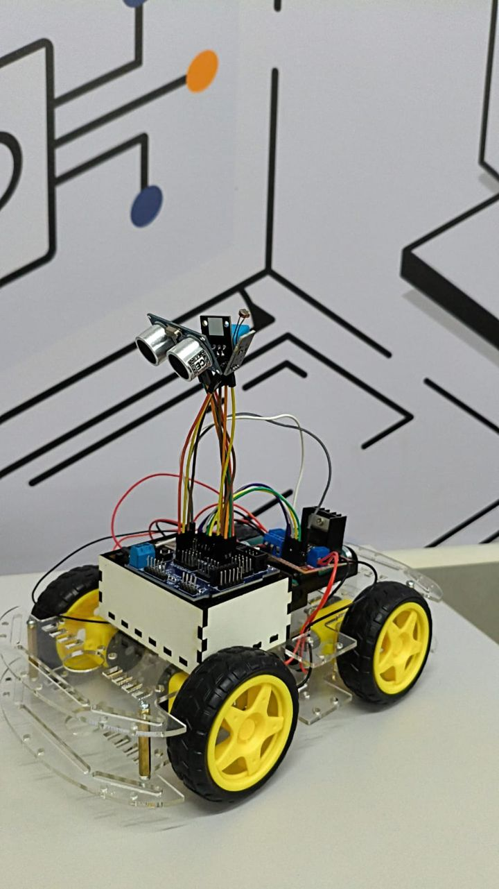
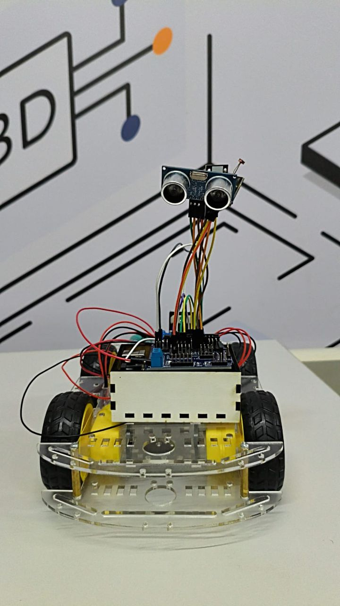
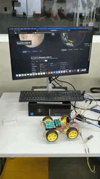

Live readings from the rover in our regolith box, next to the Earth twin and the target.
Offline
Measure
Rover now
Earth twin
Target
The rover in the lab

Arduino Uno, H-bridge, DHT, HC-SR04 and LDR

The ultrasonic "eyes" measure the nearest obstacle

Live: the rover's readings on this site
The rover sends one JSON line per second, for example {"temp":26.3,"umid":53.2,"dist":85,"luz":334}, over the USB cable. The computer it is plugged into relays each line by MQTT (Web button), or you can plug the cable into this computer (USB button). Code is in the firmware/ folder of the repository.
Weights change the ranking. Gravity, atmosphere and radiation never match on Earth.
NASA Space Apps 2026
Where on Earth can we train for the Moon and Mars?
Pick a place on the Moon or Mars. We find its twins on Earth with open NASA data, and show where the match holds and where it breaks.